Szablony serii numeracji dokumentów
Informacje ogólne
Funkcjonalność Szablony serii numeracji dokumentów ułatwia definiowanie różnych zestawów serii numeracji dla dokumentów określonego typu. W ramach tej funkcjonalności możliwe jest utworzenie:
Szablonów serii numeracji dokumentów sprzedaży,
Szablonów serii numeracji dokumentów zakupu,
Szablonów serii numeracji zleceń przesunięcia.
Ustawienia
Każdy obiekt (dokument, dziennik itp.) tworzony w ramach zdefiniowanego wcześniej szablonu dziedziczy wszystkie jego ustawienia.
Raport ustawiony dla szablonu zastępuje pierwszy raport z przypisanych do danej funkcji w standardowej funkcjonalności. Jeśli do formatki przypisanych jest więcej raportów, dalsze raporty zostaną wydrukowane po raporcie z szablonu.
W celu zdefiniowania Szablonu serii numeracji dokumentu sprzedaży, należy postępować według następujących kroków:
Należy wybrać Działy > Sprzedaż i Marketing > Administracja > Szablony numeracji dok. sprzedaży
W oknie Szablony serii nr dok. sprzedaży, które się otworzy, w pierwszym wolnym wierszu należy wypełnić pola:
Kod – w tym polu należy wprowadzić unikalny kod identyfikujący szablon numeracji dokumentu sprzedaży
Opis – w tym polu można wprowadzić tekst opisujący szablon numeracji dokumentu sprzedaży
Typ dokumentu – w tym polu należy wybrać z listy dostępnych opcji typ dokumentu sprzedaży, w którym szablon zostanie wykorzystany. Dostępne opcje to:
Oferta
Zamówienie
Faktura
Faktura korygująca
Zamówienie zbiorcze
Zamówienie zwrotu
Seria numeracji – z listy rozwijanej w tym polu należy wybrać kod wcześniej zdefiniowanej serii numeracji, na podstawie której będą nadawane numery nowotworzonym dokumentom.
Seria numeracji księgowania – z listy rozwijanej w tym polu należy wybrać kod wcześniej zdefiniowanej serii numeracji, na podstawie której będą nadawane numery dokumentom zaksięgowanym (fakturom i fakturom korygującym).
Seria numeracji wydań – z listy rozwijanej w tym polu należy wybrać kod wcześniej zdefiniowanej serii numeracji, na podstawie której będą nadawane numery dokumentom wydań.
Seria numeracji zaliczek – z listy rozwijanej w tym polu należy wybrać kod wcześniej zdefiniowanej serii numeracji, na podstawie której będą nadawane numery zaksięgowanym fakturom zaliczkowym.
Seria numeracji faktur korygujących zaliczki – z listy rozwijanej w tym polu należy wybrać kod wcześniej zdefiniowanej serii numeracji, na podstawie której będą nadawane numery zaksięgowanym fakturom korygującym faktury zaliczkowe.
Kod opisu księgowania – z listy rozwijanej w tym polu można wybrać wcześniej zdefiniowany kod opisu księgowania, który będzie kopiowany do dokumentów stworzonych w ramach danego szablonu. Niewypełnienie tego pola spowoduje przypisywanie kodu opisu księgowania ustawionego jako domyślny dla sprzedaży.
Kod VAT'u przekazanego – z listy rozwijanej w tym polu można wybrać wcześniej zdefiniowany kod VAT'u przekazanego, którego ustawienia zostaną wykorzystane do automatycznego rozliczenia VAT z faktury wystawionej z wykorzystaniem tego szablonu.
Kod szablonu nast. kroku procesu – w tym polu należy wskazać, jaki kod szablonu ma być przypisany do dokumentu sprzedaży w następnym kroku procesu. Kod ten zostanie przypisany do zamówienia tworzonego z oferty lub z zamówienia zbiorczego. Jeśli pole to jest puste, a w systemie zdefiniowano więcej niż jeden szablon dla zamówienia, podczas tworzenia zamówienia z oferty lub z zamówienia zbiorczego zostanie otwarte okno wyboru szablonu i użytkownik będzie mógł wybrać szablon, jaki zostanie przypisany do zamówienia. Jeśli natomiast pole Kod szablonu nast. kroku procesu jest puste, a w systemie zdefiniowano tylko jeden szablon dla zamówienia, ten właśnie szablon zostanie automatycznie przypisany do nowego dokumentu.
ID raportu faktury – z listy rozwijanej w tym polu należy wybrać raport, który zawiera wzór dokumentu, na podstawie którego zostanie wydrukowana faktura (lub faktura korygująca).
Nazwa raportu faktury – pole wypełniane automatycznie przez system nazwą przypisaną do raportu wybranego w polu ID raportu faktury.
ID raportu wydania – z listy rozwijanej w tym polu należy wybrać raport, który zawiera wzór dokumentu, na podstawie którego zostanie wydrukowane wydanie z magazynu.
Nazwa raportu wydania – pole wypełniane automatycznie przez system nazwą przypisaną do raportu wybranego w polu ID raportu wydania.
Pobierz kurs wymiany dla daty – w tym polu należy wybrać datę, według której będzie pobierany kurs wymiany waluty. Dostępne opcje to:
Data księgowania
Data dokumentu
Data sprzedaży
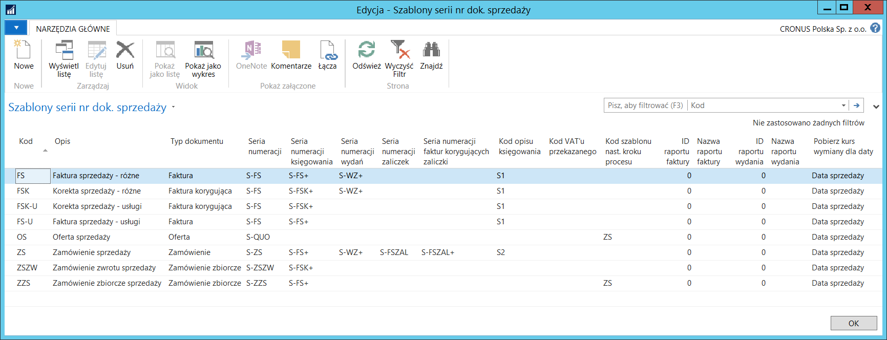
W celu zdefiniowania Szablonu serii numeracji dokumentu zakupu, należy postępować według następujących kroków:
Należy wybrać Działy > Zakup > Administracja > Szablony numeracji dok. zakupu
W oknie Szablony serii nr dok. zakupu, które się otworzy, w pierwszym wolnym wierszu należy wypełnić pola:
Kod – w tym polu należy wprowadzić unikalny kod identyfikujący szablon numeracji dokumentu zakupu
Opis – w tym polu można wprowadzić tekst opisujący szablon numeracji dokumentu zakupu
Typ dokumentu – w tym polu należy wybrać z listy dostępnych opcji typ dokumentu zakupu, w którym szablon zostanie wykorzystany. Dostępne opcje to:
Oferta
Zamówienie
Faktura
Faktura korygująca
Zamówienie zbiorcze
Zamówienie zwrotu
Seria numeracji – z listy rozwijanej w tym polu należy wybrać kod wcześniej zdefiniowanej serii numeracji, na podstawie której będą nadawane numery nowotworzonym dokumentom.
Seria numeracji księgowania – z listy rozwijanej w tym polu należy wybrać kod wcześniej zdefiniowanej serii numeracji, na podstawie której będą nadawane numery dokumentom zaksięgowanym (fakturom i fakturom korygującym).
Seria numeracji przyjęć – z listy rozwijanej w tym polu należy wybrać kod wcześniej zdefiniowanej serii numeracji, na podstawie której będą nadawane numery dokumentom przyjęć.
Seria numeracji zaliczek – z listy rozwijanej w tym polu należy wybrać kod wcześniej zdefiniowanej serii numeracji, na podstawie której będą nadawane numery zaksięgowanym fakturom zaliczkowym.
Seria numeracji faktur korygujących zaliczki – z listy rozwijanej w tym polu należy wybrać kod wcześniej zdefiniowanej serii numeracji, na podstawie której będą nadawane numery zaksięgowanym fakturom korygującym faktury zaliczkowe.
Kod opisu księgowania – z listy rozwijanej w tym polu można wybrać wcześniej zdefiniowany kod opisu księgowania, który będzie kopiowany do dokumentów stworzonych w ramach danego szablonu. Niewypełnienie tego pola spowoduje przypisywanie kodu opisu księgowania ustawionego jako domyślny dla zakupu.
Kod szablonu nast. kroku procesu – w tym polu należy wskazać, jaki kod szablonu ma być automatycznie przypisany do dokumentu zakupu w następnym kroku procesu. Kod ten zostanie przypisany do zamówienia tworzonego z oferty lub z zamówienia zbiorczego. Jeśli pole to jest puste, a w systemie zdefiniowano więcej niż jeden szablon dla zamówienia, podczas tworzenia zamówienia z oferty lub z zamówienia zbiorczego zostanie otwarte okno wyboru szablonu i użytkownik będzie mógł wybrać szablon, jaki zostanie przypisany do zamówienia. Jeśli natomiast pole Kod szablonu nast. kroku procesu jest puste, a w systemie zdefiniowano tylko jeden szablon dla zamówienia, ten właśnie szablon zostanie automatycznie przypisany do nowego dokumentu.
ID raportu faktury – z listy rozwijanej w tym polu należy wybrać raport, który zawiera wzór dokumentu, na podstawie którego zostanie wydrukowana faktura (lub faktura korygująca).
Nazwa raportu faktury – pole wypełniane automatycznie przez system nazwą przypisaną do raportu wybranego w polu ID raportu faktury.
Identyfikator raportu przyjęcia – z listy rozwijanej w tym polu należy wybrać raport, który zawiera wzór dokumentu, na podstawie którego zostanie wydrukowane przyjęcie do magazynu.
Nazwa raportu przyjęcia – pole wypełniane automatycznie przez system nazwą przypisaną do raportu wybranego w polu Identyfikator raportu przyjęcia.
Pobierz kurs wymiany dla daty – w tym polu należy wybrać datę, według której będzie pobierany kurs wymiany waluty. Dostępne opcje to:
Data księgowania
Data dokumentu
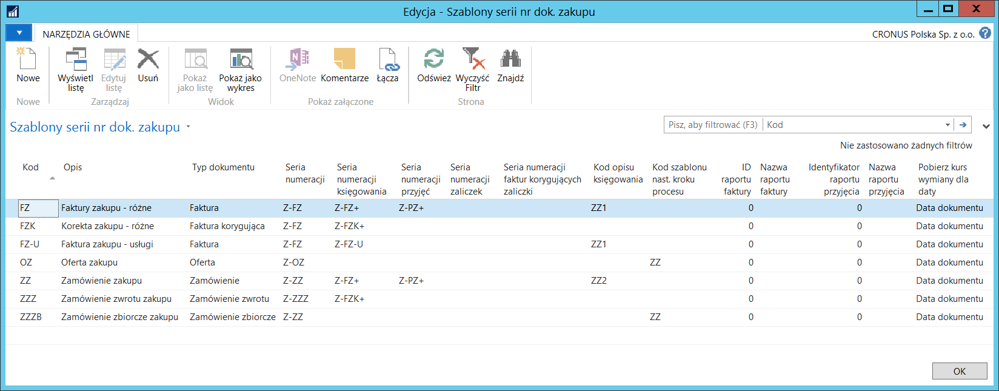
W celu zdefiniowania Szablonu serii numeracji zlecenia przesunięcia, należy postępować według następujących kroków:
Należy wybrać Działy > Magazyn > Administracja > Szablony numeracji zlec. przesunięcia.
W oknie Szablony serii nr zlec. przesunięcia, które się otworzy, w pierwszym wolnym wierszu należy wypełnić pola:
Kod – w tym polu należy wprowadzić unikalny kod identyfikujący szablon numeracji zlecenia przesunięcia.
Opis – w tym polu można wprowadzić tekst opisujący szablon numeracji zlecenia przesunięcia.
Kod lokalizacji pierwotnej – z listy rozwijanej w tym polu należy wybrać wcześniej zdefiniowaną lokalizację, z której będzie dokonane wydanie w ramach przesunięcia międzymagazynowego.
Kod lokalizacji docelowej – z listy rozwijanej w tym polu należy wybrać wcześniej zdefiniowaną lokalizację, w której będzie dokonane przyjęcie w ramach przesunięcia międzymagazynowego.
Seria numeracji zlec. przes. – z listy rozwijanej w tym polu należy wybrać kod wcześniej zdefiniowanej serii numeracji, na podstawie której będą nadawane numery kolejnym zleceniom przesunięcia.
Seria num. zaks. wyd. przes. – z listy rozwijanej w tym polu należy wybrać kod wcześniej zdefiniowanej serii numeracji, na podstawie której będą nadawane numery zaksięgowanym dokumentom wydań z lokalizacji pierwotnej.
Seria num. zaks. przyj. przes. – z listy rozwijanej w tym polu należy wybrać kod wcześniej zdefiniowanej serii numeracji, na podstawie której będą nadawane numery zaksięgowanym dokumentom przyjęć do lokalizacji docelowej.
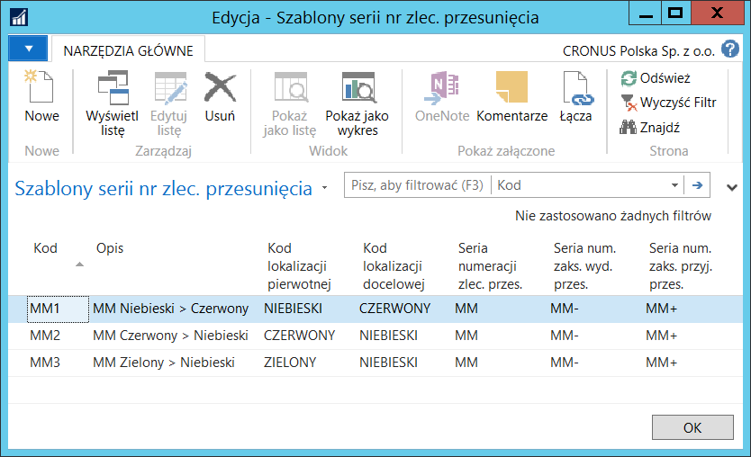
Funkcjonalności Szablony serii nr dok. zakupu i Szablony serii nr zlec. przesunięcia mają zastosowanie w Arkuszach zapotrzebowania. W celu ułatwienia pracy użytkownikom, można wybrać domyślne kody szablonów serii numeracji dokumentów, które będą użyte przy uzupełnianiu stanów magazynowych.
W celu zdefiniowania domyślnych szablonów serii nr dok. zakupu i zlec. przesunięcia dla Jednostki składowania zapasu, należy postępować według następujących kroków:
Należy wybrać Działy > Magazyn > Planowanie i wykonywanie > Jednostki składowania zapasu.
W oknie Jednostki składowania zapasu należy zaznaczyć wiersz z wybraną jednostką składowania zapasów i wybrać Edycja.
W kartotece wybranej jednostki składowania zapasów, która się otworzy, na karcie skróconej Uzupełnienie należy wypełnić pola:
Domyślny kod szablonu serii num. dok. zakupu – z listy rozwijanej w tym polu należy wybrać jeden z wcześniej zdefiniowanych szablonów numeracji dokumentów zakupu.
**Domyślny kod szablonu serii num. dok. przesunięcia – z **listy rozwijanej w tym polu należy wybrać jeden z wcześniej zdefiniowanych szablonów numeracji zleceń przesunięcia.
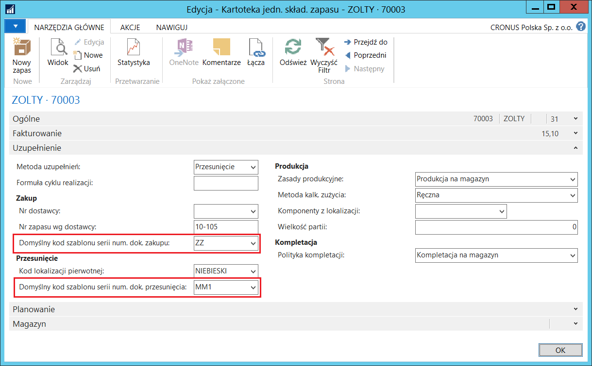
W celu zdefiniowania domyślnych szablonów serii nr dok. zakupu i zlec. przesunięcia dla Zapasu, należy postępować według następujących kroków:
Należy wybrać Działy > Magazyn > Planowanie i wykonywanie > Zapasy.
W oknie Zapasy należy zaznaczyć wiersz z wybranym zapasem i wybrać Edycja.
W kartotece wybranego zapasu, która się otworzy, na karcie skróconej Uzupełnienie należy wypełnić pola:
Domyślny kod szablonu serii num. dok. zakupu – z listy rozwijanej w tym polu należy wybrać jeden z wcześniej zdefiniowanych szablonów numeracji dokumentów zakupu.
Domyślny kod szablonu serii num. dok. przesunięcia- z listy rozwijanej w tym polu należy wybrać jeden z wcześniej zdefiniowanych szablonów numeracji zleceń przesunięcia.
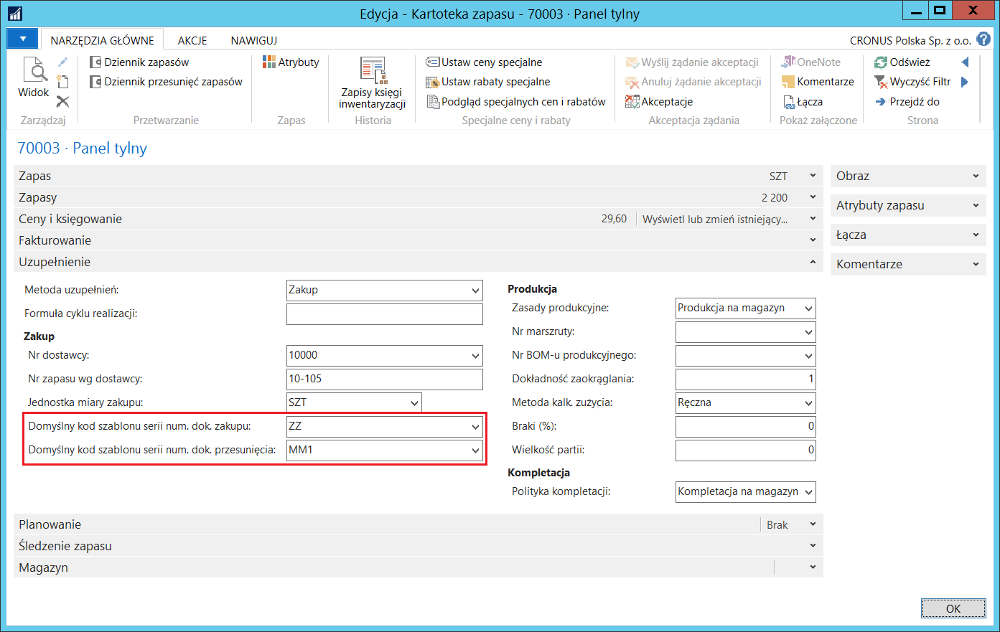
W celu zdefiniowania domyślnego szablonu serii nr dok. zakupu dla zapasów nie mających przypisanego domyślnego szablonu serii nr dok. zakupu w kartotece ani jednostce składowania, należy postępować według następujących kroków:
Należy wybrać Działy > Zakup > Administracja > Ustawienia zakupów i zobowiązań.
W oknie Ustawienia zakupów i zobowiązań, które się otworzy, na karcie skróconej Ogólne należy z listy rozwijanej w polu Domyślny kod szablonu serii num. dok. zakupu wybrać jeden z wcześniej zdefiniowanych szablonów serii nr dok. zakupu.
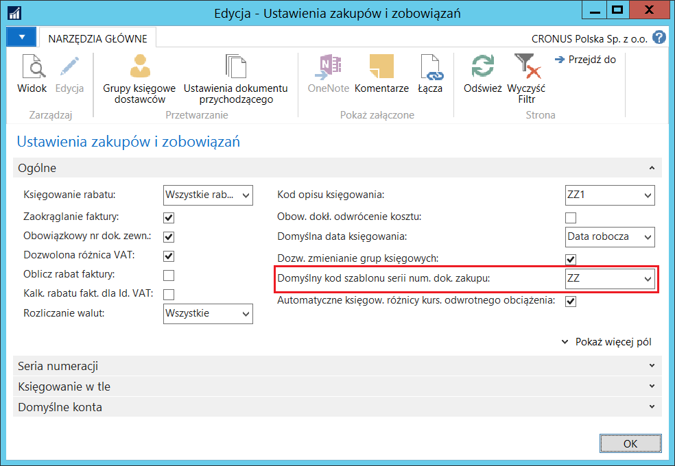
W celu zdefiniowania domyślnego szablonu serii nr zlec. przesunięcia dla zapasów niemających przypisania domyślnego szablonu serii nr zlec. przesunięcia w kartotece ani jednostce składowania, należy postępować według następujących kroków:
Należy wybrać Działy > Magazyn > Administracja > Ustawienia magazynu.
W oknie Ustawienia magazynu, które się otworzy, na karcie skróconej Ogólne należy z listy rozwijanej w polu Domyślny kod szablonu serii num. dok. przesunięcia wybrać jeden z wcześniej zdefiniowanych szablonów serii nr zlec. przesunięcia.
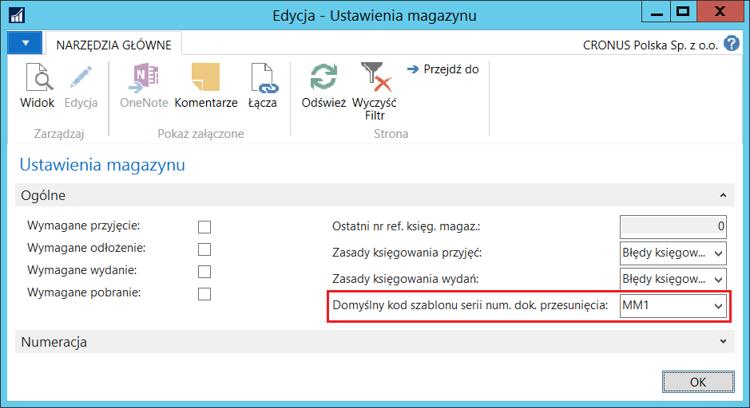
Obsługa
W celu utworzenia faktury sprzedaży z wykorzystaniem jednego z wcześniej zdefiniowanych Szablonów serii nr dok. sprzedaży, należy postępować według następujących kroków:
Należy wybrać Działy > Sprzedaż i Marketing > Przetwarzanie zamówień > Faktury sprzedaży.
W oknie Faktury sprzedaży, które się otworzy, należy wybrać Nowe.
W kartotece nowej faktury sprzedaży należy przenieść kursor do innego pola niż to, w którym się znalazł domyślnie.
Otworzy się okno Lista szablonów serii nr dok. sprzedaży, w którym należy zaznaczyć wiersz z wybranym szablonem i wybrać OK.
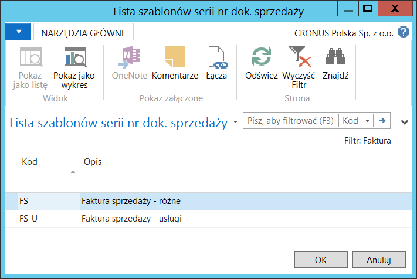
Do nagłówka wprowadzanej faktury sprzedaży system wstawi parametry domyślnie przypisane do wybranego szablonu (np. Seria numeracji, Kod opisu księgowania itp.). Parametry wstawione domyślnie do pól edytowalnych mogą zostać ręcznie zmienione.
Dalsze kroki procesu wystawiania faktury należy wykonać standardowo.
Uwaga
Obsługa funkcjonalności Szablony serii nr dok. sprzedaży działa w ten sam sposób dla następujących typów dokumentów sprzedaży: Oferta, Zamówienie, Faktura, Faktura korygująca, Zamówienie zbiorcze, Zamówienie zwrotu.
W celu utworzenia faktury zakupu z wykorzystaniem jednego z wcześniej zdefiniowanych Szablonów serii nr dok. zakupu, należy postępować według następujących kroków:
Należy wybrać Działy > Zakup > Przetwarzanie zamówień > Faktury zakupu.
W oknie Faktury zakupu, które się otworzy, należy wybrać Nowe.
W kartotece nowej faktury zakupu należy przenieść kursor do innego pola niż to, w którym się znalazł domyślnie.
Otworzy się okno Lista szablonów serii nr dok. zakupu, w którym należy zaznaczyć wiersz z wybranym szablonem i wybrać OK.
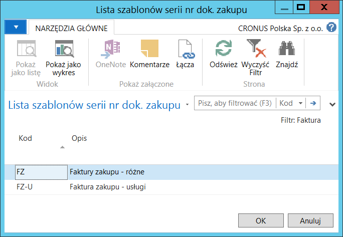
Do nagłówka wprowadzanej faktury zakupu system wstawi parametry domyślnie przypisane do wybranego szablonu (np. Seria numeracji, Kod opisu księgowania itp.). Parametry wstawione domyślnie do pól edytowalnych mogą zostać ręcznie zmienione.
Dalsze kroki procesu wprowadzania faktury należy wykonać standardowo.
Uwaga
Obsługa funkcjonalności Szablony serii nr dok. zakupu działa w ten sam sposób dla następujących typów dokumentów zakupu: Oferta, Zamówienie, Faktura, Faktura korygująca, Zamówienie zbiorcze, Zamówienie zwrotu.
W celu utworzenia zlecenia przesunięcia z wykorzystaniem jednego z wcześniej zdefiniowanych Szablonów serii nr zlec. przesunięcia, należy postępować według następujących kroków:
Należy wybrać Działy > Magazyn > Planowanie i wykonywanie > Zlecenia przesunięcia.
W oknie Zlecenia przesunięcia, które się otworzy, należy wybrać Nowe.
W kartotece nowego zlecenia przesunięcia należy przenieść kursor do innego pola niż to, w którym się znalazł domyślnie.
Otworzy się okno Lista szablonów serii nr zlec. przesunięcia, w którym należy zaznaczyć wiersz z wybranym szablonem i wybrać OK.
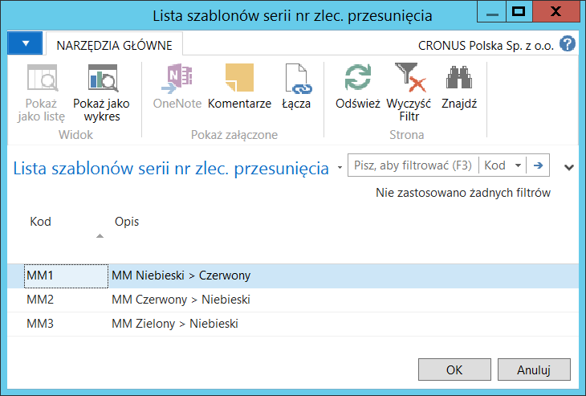
Do nagłówka wprowadzanego zlecenia przesunięcia system wstawi parametry domyślnie przypisane do wybranego szablonu (np. Seria numeracji, Kody lokalizacji itp.). Parametry wstawione domyślnie do pól edytowalnych mogą zostać ręcznie zmienione.
Dalsze kroki procesu księgowania zlecenia przesunięcia należy wykonać standardowo.
W Arkuszach zapotrzebowania funkcja Wykonaj komunikat akcji tworząca odpowiednie dokumenty korzysta z szablonów serii nr dok. zakupu w przypadku metody uzupełnień Zakup i z szablonów serii nr zlec. przesunięcia w przypadku metody uzupełnień Przesunięcie.
W przypadku tworzenia wierszy arkusza zapotrzebowania przy użyciu funkcji Oblicz plan, system uzupełnia pole Kod szablonu serii numeracji w wierszach arkusza zapotrzebowania odpowiednimi kodami pobranymi z kartoteki jednostki składowania, a jeśli tam domyślne kody nie są przypisane, wtedy pobierane są one z kartoteki zapasu, a gdy również tutaj ich brak, wtedy pobierane są z okna Ustawienia zakupów i zobowiązań lub Ustawienia magazynu.
Ręczne wprowadzanie wierszy arkuszy zapotrzebowania wymaga ręcznego uzupełnienia pola Kod szablonu serii numeracji. Pole to można też pozostawić puste, wtedy system podczas tworzenia dokumentów przy pomocy funkcji Wykonaj komunikat akcji skorzysta z domyślnych szablonów serii numeracji dokumentów w takiej kolejności, jak przy funkcji Oblicz plan.
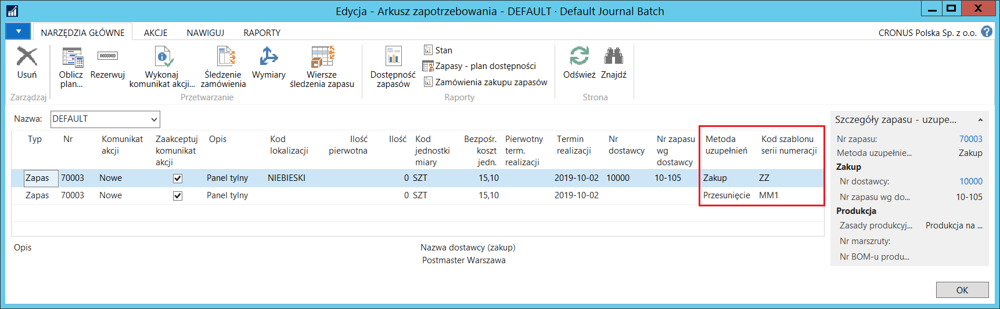